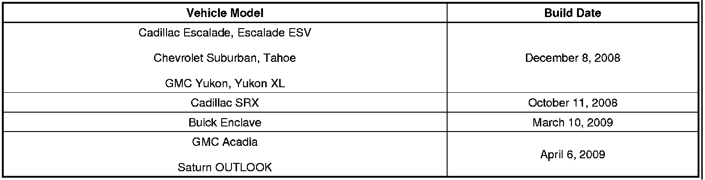
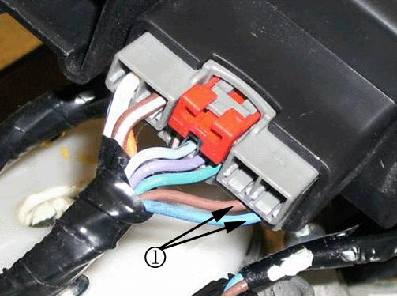
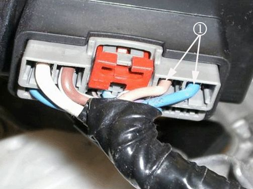
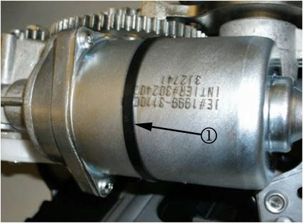
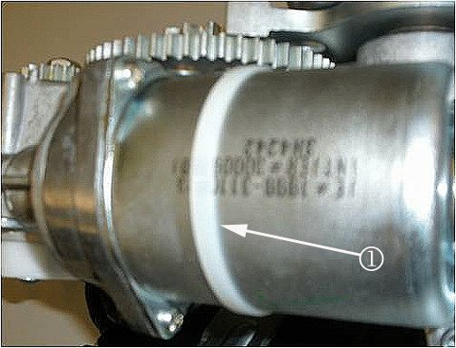
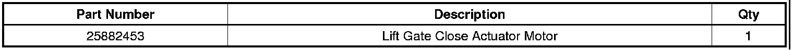

Body - Info on Liftgate Actuator Motor Change
INFORMATIONBulletin No.: 09-08-66-007A
Date: April 25, 2011
Subject: Information on Liftgate Close Actuator Motor Change
Models:
2008-2009 Buick Enclave
2007-2009 Cadillac Escalade, Escalade ESV, SRX
2007-2009 Chevrolet Suburban, Tahoe
2007-2009 GMC Acadia, Yukon, Yukon XL
2007-2009 Saturn OUTLOOK
All Equipped with Power Lift Gate RPO E61 or TB5
Supercede:
This bulletin is being revised to change the build date for the Cadillac SRX. Please discard Corporate Bulletin Number 09-08-66-007 (Section 08 - Body and Accessories).
2009 models built after the following dates have changed the Liftgate Close Actuator Motor from a low frequency motor to a high frequency motor. The two units are not interchangeable.

Important
DO NOT use P/N 25889602 (low frequency motor) for vehicles built after the dates shown above.
The running change from the low frequency Liftgate Close Actuator Motor to the high frequency Liftgate Close Actuator Motor can be identified by the following physical changes:

The high frequency motor connector clutch circuits are on pins 13 and 14 (1).

The low frequency motor connector clutch circuits are on pins 3 and 4 (1).

The high frequency motor utilizes a black tie wrap (1).

The low frequency motor utilizes a white tie wrap (1).

Parts Information

Disclaimer